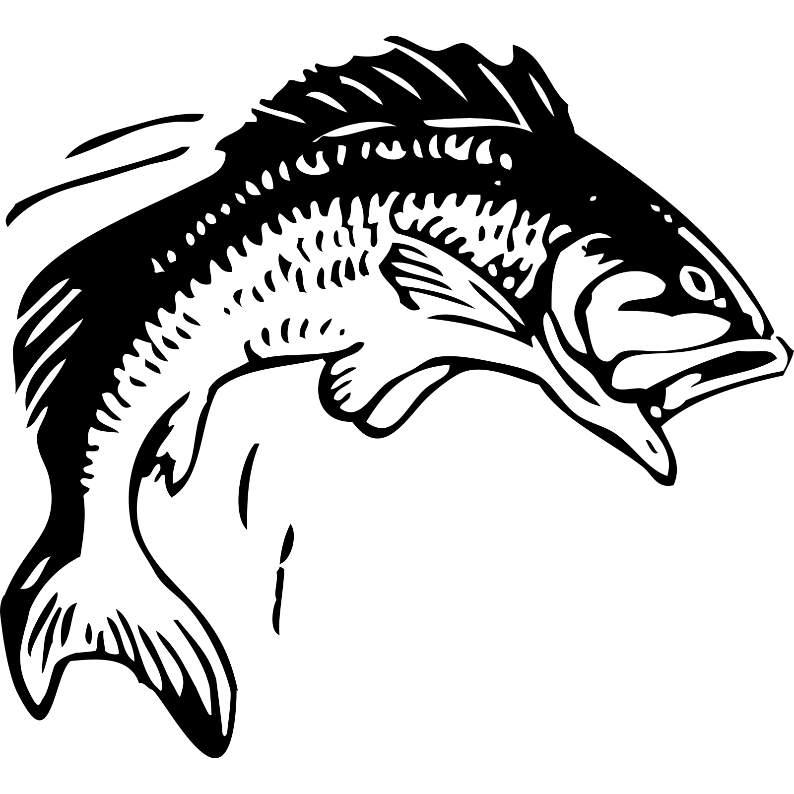

<nav class="navbar navbar-expand-lg navbar-light bg-light">
  <div class="container-fluid">
    <a class="navbar-brand" href="#">
      
    </a>
    <div class="collapse navbar-collapse" id="navbarNav">
      <ul class="navbar-nav">

        <li class="nav-item">
          <a class="nav-link active" aria-current="page" [routerLink]="['/login']">Login</a>
        </li>
        <li class="nav-item">
          <a class="nav-link active" aria-current="page" [routerLink]="['/cadastrarUsuario']">Cadastro</a>
        </li>
        <li class="nav-item">
          <a class="nav-link active" aria-current="page" [routerLink]="['/timeline']">Timeline</a>
        </li>
      </ul>
    </div>
  </div>
</nav>

<div class="container">
  <router-outlet></router-outlet>
</div>
